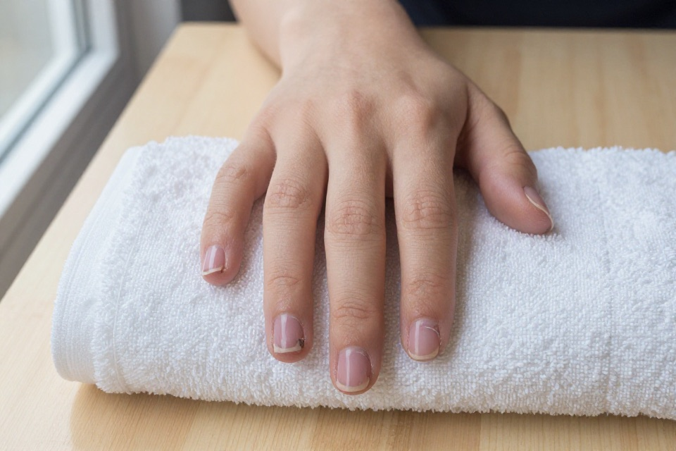

Örnek site: hizmet, fiyat, süre, çalışma saati, puan ve fotoğraflar sizin bilginizle değişir.
Göztepe'de cilt, kaş ve tırnak bakımı
Küçük bir atölyeyiz: her randevuda aynı uzman, aynı oda. İşlemleri seçin, randevu kartınız dolsun; isteğiniz WhatsApp'tan salona gitsin.
4,9 Google puanı, 160 yorum. Uzmanınız Defne Aydın, 12 yıl.
İşlem seçin, kartınız dolsun


ÖnceSonraManikür ve kalıcı oje: önce, sonra
Tırnak boyu eşitlenir, kütikül temizlenir, oje sürülür. Kalıcı oje yaklaşık 60 dakika, eski ojenin çıkarılması dâhil.
Örnek görsel, yapay zekâ ile üretildi. Gerçek sitede salonun kendi önce ve sonra fotoğrafları, müşteri izniyle yer alır.
Randevunuzu ben karşılarım
On iki yıldır cilt bakımı yapıyorum. Atölyeyi küçük tuttum ki herkesin cildini ve ne sevdiğini hatırlayayım. İlk gelişinizde önce konuşuruz, sonra başlarız.
Defne Aydınkurucu, cilt bakım uzmanı
- “Üç yıldır başka yere gitmiyorum. Cildim değişince ürünü de değiştirdi, bunu kendisi fark etti.”Göztepe
- “Kaş için geldim, ölçüp çizip gösterdi, onaylamadan almadı.”Erenköy
- “Randevu saatinde başladı, beklemedim. Oda çok sakin.”Suadiye
4,9 Google puanı, 160 yorum. Puan ve yorumlar örnektir; sitede salonun gerçek puanı ve yorumları yer alır. Haritada yorumlar (demoda kapalı)
Randevudan önce, sırasında, sonra
Burada olmayanı WhatsApp'tan sorun.
Randevudan önce
- Kimlere uygun değil?
- Hamilelik, aktif cilt enfeksiyonu, yeni güneş yanığı ya da yakın zamanda yapılmış bir cilt işlemi varsa randevudan önce yazın. Uygun değilse işlem yapılmaz, başka zamana alınır. İlk gelişte kısa bir ön görüşme yaparız. Kirpik liftingde göz enfeksiyonu, ağdada varis ya da yeni lazer/peeling, kalıcı ojede tırnak mantarı varsa da önce yazın.
- Randevumu iptal edebilir miyim?
- Randevudan 3 saat önceye kadar WhatsApp'tan yazmanız yeterli, ücret alınmaz.
Randevuda
- İlk cilt bakımında ne oluyor?
- İlk 10 dakika cildinize bakıp ne kullandığınızı konuşuruz, sonra bakım başlar. Toplam 60-75 dakika sürer.
- Malzemeler tek kullanımlık mı?
- Ağda spatulası, eldiven ve manikür törpüsü tek kullanımlıktır; metal aletler her müşteriden sonra temizlenip dezenfekte edilir.
Randevudan sonra
- Nasıl ödeme yapabilirim?
- Nakit, kart ya da havale. Ödeme işlem bitince alınır.
- İade var mı?
- Tek seanslık çalışırız, paket satmayız. Ödeme işlemden sonra alınır; işlem yapılmadıysa ücret alınmaz. Sonuçtan memnun kalmazsanız 3 gün içinde yazın, ücretsiz rötuş yaparız (örnek koşul).
Göztepe istasyonuna 4 dakika
Örnek Sokak No: 2, Göztepe, Kadıköy
Haritada yol tarifi (demoda kapalı)
- Pzt10-20
- Sal10-20
- Çar10-20
- Per10-20
- Cum10-20
- Cmt10-20
- Pazkapalı